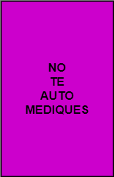
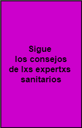
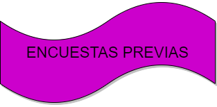

|  |  |
El compromiso organización y jugadorxs es crucial
Es muy importante que cada persona lleve su botiquín personal.
Pero más importante todavía es que la medicación que llevemos nos la hayan prescrito y la hayamos probado anteriormente para evitar alergias medicamentosas. También es fundamental NO TOMAR la medicación de otra persona, ya que lo que es bueno para ti puede dañarme a mi.
Asegurarse, en el caso de los pacientes crónicos, que llevan la medicación para los días que dure el evento e incluso añadir para varios días, ya que cualquier percance puede dejarlos sin tratamiento.
Yo pongo en sobres las dosis de medicación necesaria para cada toma del día. Por ejemplo: "viernes noche". Esto puede resultar (dependiendo del caso) un bulto farragoso pero nos aseguramos que tenemos las tomas necesarias para cada momento y que vamos a estar bien. Recomiendo no sacar del blíster las pastillas o píldoras, ya que podrían dañarse. Por ejemplo, esto ocurre con las pastillas de Depakine (valproato sódico). Es preciso que nuestra medicación esté en un lugar seguro (por ejemplo, evitar que se mojen o el calor) y alejada del alcance y la vista de los niños.
Si olvidamos una dosis, no tomar en la siguiente el doble. Leer el prospecto en todo caso. Si tenemos dudas y/o no tenemos el prospecto con nosotrxs, acudir a la ficha técnica del propio medicamento que podemos obtener fácilmente en internet. De no tener ni datos móviles ni el prospecto, no tomar dosis doble.
He aquí elementos que considero que podrían contener el botiquín personal de lxs jugadorxs